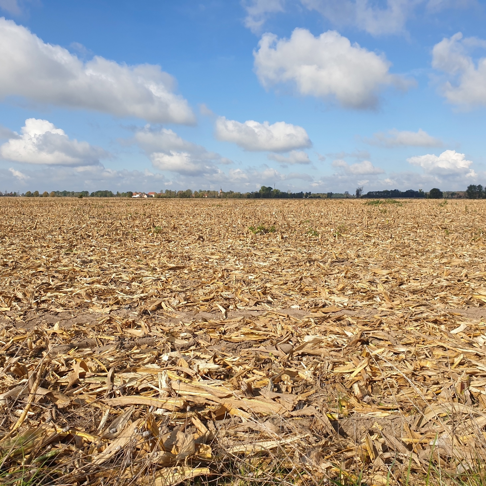

ESTRESSE HÍDRICO

Reservatórios de água mal monitorados ou sem nenhum tipo de monitoramento podem desencandear estresse hídrico nas suas plantações e afetar toda sua cadeia de produção.
Reservatórios de água mal monitorados ou sem nenhum tipo de monitoramento podem desencandear estresse hídrico nas suas plantações e afetar toda sua cadeia de produção.